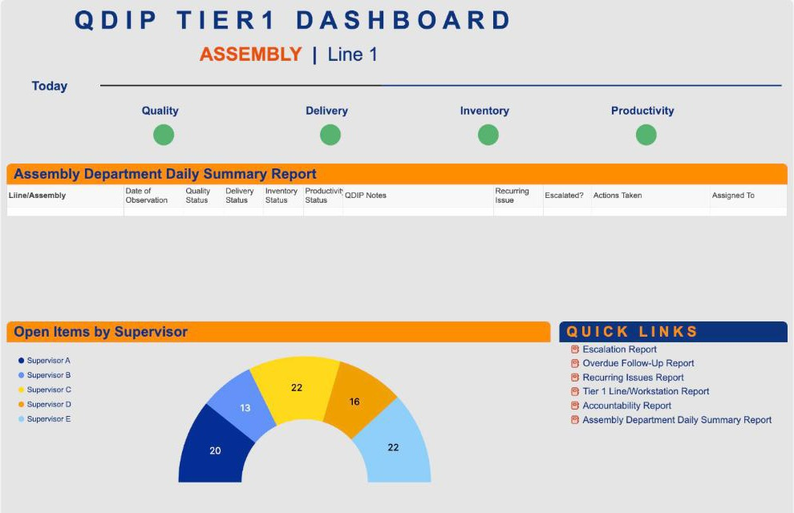

Your operation isn’t broken. It just can’t see itself clearly.
We find the friction points that slow growth, build the systems that make them visible, and deliver results you can measure.
- 25+
- years running operations
- 100+
- client engagements
- EN · ES
- US/Mexico experience
- 1
- principal-led, no junior handoffs
- annualized savings identified at a major integrated health system
- $25M
- annualized savings identified at a major integrated health system
- hours of patient capacity per 100 beds, projected regionwide from a hospital pilot
- 5,000
- hours of patient capacity per 100 beds, projected regionwide from a hospital pilot
- on-time delivery improvement for a steel tank manufacturer
- +50%
- on-time delivery improvement for a steel tank manufacturer
We start where the work happens, and step back when your team runs it.
- 1
Walk the floor
We start where the work happens, not in a conference room. We see the workarounds your team has learned to live with.
- 2
Find the friction
Root causes, scored and ranked. A short list of what to fix first and why it matters to the P&L.
- 3
Build the system
Processes, cadences, and Smartsheet tools that make the right information visible to the right people.
- 4
Hand it off
We embed with your team until it runs without us. Then we step back, and your people carry it forward.
Operational assessment & strategy
Where jobs stall, where information has to be asked for instead of seen, and where capacity is lost to broken handoffs. You get a scored priority list and a clear first move, not a report that sits on a shelf.
Friction mapping · Roadmap · Prioritization
See an assessment in actionProcess improvement
Lean, Kanban, and continuous improvement, used as tools and not dogma. We eliminate waste, reduce variation, and build repeatable processes that scale with you.
Lean · Kanban · QDIP · CI
See Lean in actionSmartsheet & digital operations
Dashboards, automated workflows, and real-time command centers built on Smartsheet. Your team gets visibility. Leadership gets the data to make faster, better decisions.
Smartsheet · Dashboards · Automation
See the Smartsheet buildsResults from 19 engagements, in manufacturing, healthcare and supply chain
Assembly, custom fabrication, maquiladora environments, and supply chain. Measurable gains in lead time, efficiency, and on-time delivery across US and Mexico operations.
Patient capacity, workforce readiness command centers, medication management, and enterprise performance dashboards for integrated health systems.
Inventory management, S&OP planning, dual-sourcing, and distributor performance. From Fortune 100 consumer goods to high-growth brands.
Post-acquisition rigor and scalable systems. We help portfolio companies move from founder-dependent operations to repeatable, measurable processes.
Forms, automations, reports, and dashboards, designed with the people who run the work every day.
- $25MAnnualized savings and 8%+ less medication waste, from simple Kanban pulls in clinic medication closets.Medication management · Large integrated health system
- 12,000+Contingent workers onboarded and deployed with zero glitches, during what the union called the largest open-ended health care strike in U.S. history.Workforce mobilization · Large integrated health system
- 5,000 hrsPatient-capacity gain per 100 beds, projected across the region from a pilot that improved housekeeping scheduling, productivity, and data.Patient operations · Major integrated health system
- −45%Lead time reduction plus a 30% gain in labor efficiency, within 10 weeks of kickoff.Lean transformation · Custom transformer manufacturer · US/Mexico
- +50%On-time delivery with 30% more production capacity, no added headcount or capital equipment, plus another 30% projected from a new facility layout.Supply chain assessment · Bolted steel tank manufacturer
- +49%Product availability after qualifying 110 products at contract manufacturers, taking 30M+ units off a plant under repair.Dual sourcing · Fortune 100 skincare manufacturer
- +50%Production capacity from S&OP process design and SAP integration.Electronics · Fortune 100 electronics manufacturer
- 2×Year-over-year growth supported by operations and supply chain work, with 10%+ supplier savings plus 3–5% in rebates.Pet nutrition · PE-backed fresh pet food company
- ~$340KAnnual benefit projected from an East Coast fulfillment partner, with 1 to 2 days faster delivery. A clear go/no-go case for the board.Network strategy · National consumer wellness products company
- $2MInventory relief through demand planning, with a 25% gain in project management productivity.Inventory · $150M+ skincare company
- −30%Grinder assembly labor, with 1 to 2 days faster turnaround and a 40% faster seal cell, through Lean and Kanban.Process equipment · Wastewater equipment manufacturer
- +30 ptsNPS improvement from an operations and customer service initiative across US airport locations.Customer experience · Major national car rental company
- ~85%Fewer columns per tracker, cut from more than 200 to a few dozen, after a multi-state program was re-architected around one tract register, one plan template, and role-based views.Land acquisition · Engineering firm
- 1Standard project kit, launched by Control Center, with every project rolling up to one portfolio view. In progress.Enterprise projects · Engineering firm
- +$890KNet cash from a full warehouse and office move run from one Smartsheet command center. Finished on time, and orders kept shipping.Facility move · Consumer products company
- ~95MFormula references engineered out of a Work App that follows every repair from driver pickup to billing.Repair operations · Home medical equipment repair
- 40Medical centers staffed from the work up, checked by every site, and delivered through Smartsheet.Facilities engineering · Large integrated health system
- 100%Of position requests reviewed, with a fast track for budgeted backfills and committee votes that record themselves.Position control · Health system
- 0New hires dropped: a daily feed, a human approval step, and orientation invitations that send themselves.Onboarding · Home health division of a health system
SmartOps Pro gives every layer of your organization the visibility to act.
A complete operational intelligence suite built on Smartsheet, from daily floor huddles to executive dashboards.
- ChallengeOperational maturity assessment and structured improvement program
- LeanDigital tools for waste elimination and flow
- ISOCompliance tracking, audit readiness, and document control
- MeetingMeeting cadence, format, and accountability from the floor to leadership
- QDIPDaily huddle boards for quality, delivery, inventory, and productivity

Leaders who needed results, not reports
“He was able to hit the ground running on a complex project with many stakeholders. I would hire Michael again as he was a great fit with our team and was able to drive measurable results and supply chain improvements.”
“His success with implementing Lean principles and supply chain optimization methods was unparalleled. Michael is a person of high integrity and values and he is best known as an individual who ‘makes it happen.’”
“His greatest asset is his engaging personality which results in his ability to form cohesive teams, remove barriers, and achieve great results. I look forward to our next project together.”
Operations consulting should be done by people who’ve run operations.
I founded Portico Group in 2014 on that premise. Our team brings 25+ years of experience across manufacturing, healthcare, and distribution.
What sets us apart isn’t a methodology. It’s range. We’re equally at home presenting to a board and walking a shop floor. When you engage Portico Group, you get an experienced principal leading the work, not a junior team running a playbook.
- Smartsheet Aligned Elite Solution Partner, full certification stack
- Bilingual team, English & Spanish, with US/Mexico cross-border experience
- 100+ engagements, from Fortune 100 enterprises to PE-backed growth companies
The name comes from Solomon’s Portico. The rising steps in our logo stand for growth built on a strong foundation.
Ready to see what’s possible?
Book a free 30-minute operational assessment. No pitch. Just an honest look at where you are and what to do next.